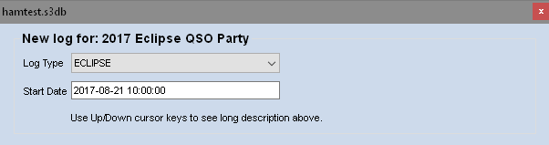
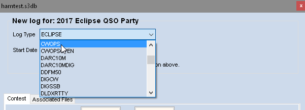
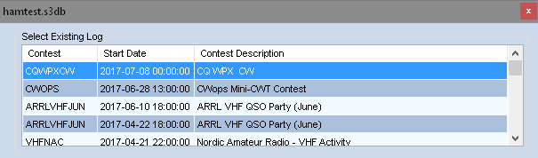
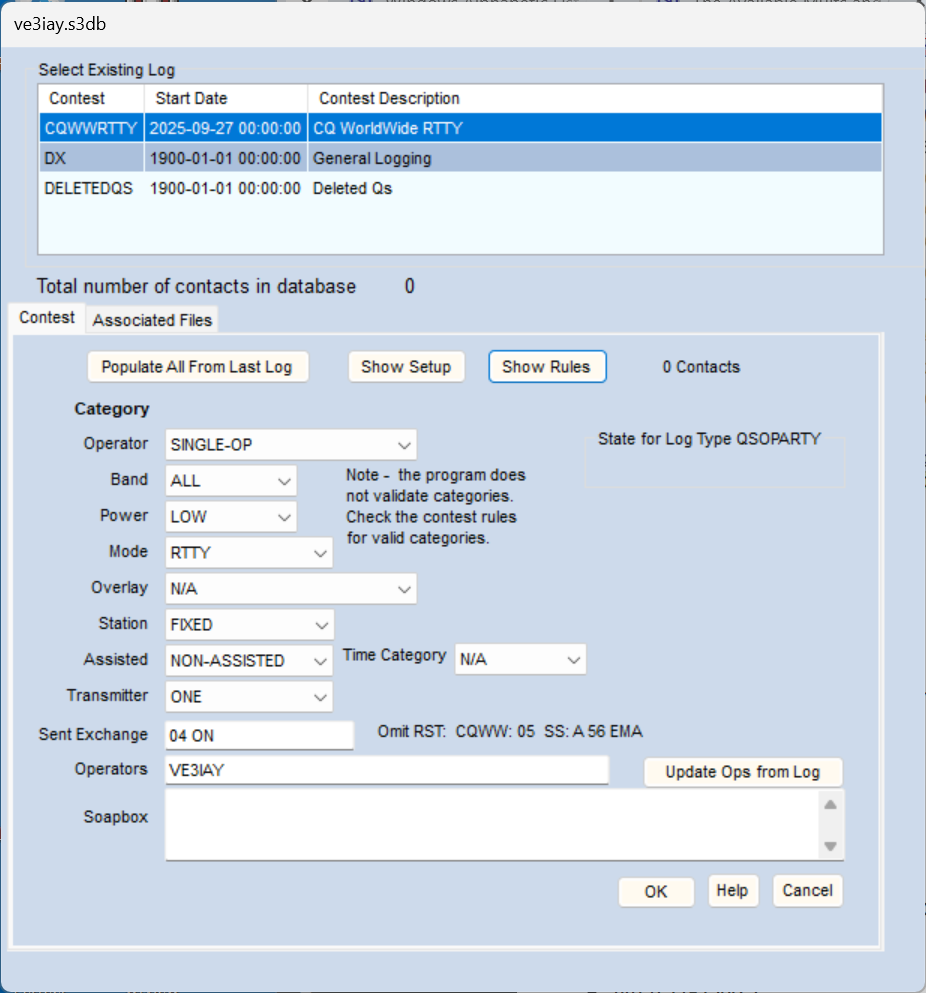
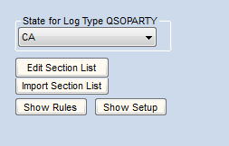
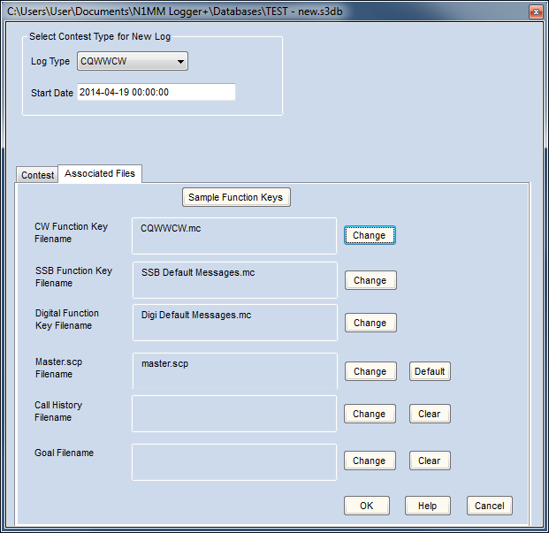

Contest Setup Dialog EN: Contest Setup Dialog
The Contest Setup Dialog – Basics (Noções Básicas)
Abra a janela Contest Setup Dialog pelo menu File da Entry Window. Clique em File > New Log in Database ou File > Open Log in Database. Note que as duas opções incluem o nome do banco de dados que vai conter esse log.
Como geralmente usada no radioamadorismo, a palavra "contest" se refere a algum tipo de evento competitivo de operação. Como o termo é usado no N1MM Logger+, pode se referir tanto a esse tipo de evento quanto a uma ocorrência específica de um evento particular, para o qual você configurou um log. Você pode ter um número ilimitado de "contests" CQWWCW (logs de contest distintos) em um único banco de dados — talvez fosse melhor chamá-los de "instâncias de contest", mas provavelmente já é tarde demais para corrigir todo uso do termo conforme seu significado em cada contexto. Praticamente sempre, o que se quer dizer fica claro pelo contexto.
Databases versus Logs (Bancos de Dados x Logs)
Antes de operar seu primeiro contest, é importante entender como o N1MM Logger+ armazena contests e contatos. Os dois termos-chave são Databases (bancos de dados) e Logs. Como analogia, pense no disco rígido do seu PC como uma grande sala cheia de equipamentos de informática. Nessa sala, o N1MM Logger+ coloca Arquivos/Gaveteiros (Databases) e, dentro deles, o N1MM Logger+ adiciona Pastas individuais (Logs). Para cada contest que você opera, você adiciona um novo Log para guardar os contatos daquele contest. Sua sala pode ter quantos gaveteiros (Databases) e quantas pastas (Logs) você quiser — até, claro, que o disco fique cheio.
Continuando a analogia, há várias formas de organizar seus gaveteiros (Databases). Alguns exemplos:
- UM DATABASE POR TIPO DE CONTEST – Alguns radioamadores preferem criar um Database para cada tipo de contest importante. A pasta Databases na sua área de arquivos de usuário do N1MM Logger+ pode conter bancos de dados (via File > New Database) chamados CQWW.s3db, ARRLDX.s3db, ARRL160.s3db e CQWPX.s3db. Ao configurar cada contest, você usa File > Open Database correspondente ao contest a operar, e depois File > New Log in Database para aquele contest específico. Um desses bancos pode conter logs de CW, Phone e RTTY de 2017, 2018, 2019... para aquele contest. Você pode querer adicionar um banco como MISCELLANEOUS.s3db para contests menores ou que você só planeja operar algumas vezes.
- UM DATABASE POR ANO CALENDÁRIO – Alguns radioamadores criam um novo Database a cada ano. No início de cada ano, você usa File > New Database para criar um banco, por exemplo K8UT_2016.s3db, K8UT_2017.s3db ou K8UT_2018.s3db. Cada banco conteria os logs de todo contest operado naquele ano. Ao configurar cada contest, você usaria File > Open Database para o ano correto, depois File > New Log in Database para aquele contest. Esse método reúne todos os contests (CQ WW, ARRL DX, CQ WPX...) trabalhados em cada ano.
- UM DATABASE POR CONTEST – Alguns radioamadores criam um novo Database toda vez que operam um contest. A pasta Databases teria muitos bancos — um para cada contest operado. Ao configurar cada contest, você usaria File > New Database, e dentro dele File > New Log. Embora alguns achem esse o método mais fácil de entender, gerenciar todos esses arquivos depois de vários anos pode virar um problema.
- UM DATABASE PARA CADA INDICATIVO DIFERENTE – Se você usa mais de um indicativo (incluindo indicativos de clube e indicativos com sufixo ou prefixo modificador, como W1ABC/3 ou ZL/G4ABC), crie um banco de dados separado para cada indicativo novo. O indicativo usado ao ar fica no campo Call da janela Station Information, e é ele que controla o campo de indicativo transmitido em cada linha do Cabrillo, além do indicativo enviado pelas macros {MYCALL} e *.
Essas não são as únicas opções de organização — talvez alguma combine melhor com o seu jeito de pensar. Que tal organizar por modo: CW.s3db, PHONE.s3db, DIGITAL.s3db? O N1MM Logger+ suporta qualquer uma dessas abordagens — escolha a que for mais fácil para você criar novos logs antes do contest e encontrar os antigos depois.
O que mais tem em um Database?
Além dos seus QSOs, o banco de dados tem várias tabelas com dados que podem (e provavelmente vão) variar de um contest para outro. Isso inclui coisas como listas de multiplicadores de contests específicos, definições de teclas de função para CW, SSB e modos digitais, o conteúdo do último arquivo wl_cty.dat carregado, e uma tabela de Call History (se alguma foi carregada).
Por que isso importa? Por vários motivos:
Se você modificar as definições de tecla de função durante a operação, a modificação vale apenas para o banco de dados atual. Cada banco tem espaço para apenas um conjunto de teclas de função por modo, um arquivo de Call History, um conjunto de botões de Telnet, e um ponteiro para um arquivo master.scp no diretório do programa.
Ao trocar para outro banco de dados, essas definições (e principalmente qualquer alteração feita) ficam para trás. Por isso o programa permite exportar definições de tecla de função (entre outras coisas) para arquivos de texto, que podem ser recarregados no banco quando necessário. Você pode nomear esses arquivos de forma específica por contest, para facilitar achá-los da próxima vez.
Os arquivos master.scp também podem mudar de contest para contest. Não é preciso carregá-los no banco, mas é preciso garantir que você apontou para o arquivo certo em cada contest. Esse é um dos motivos da aba Associated Files na janela Contest Setup — para que, ao trocar de contest, os arquivos necessários (ou ponteiros para eles) sejam carregados automaticamente.
O mesmo vale para os arquivos de Call History. Um erro comum entre usuários de Call History é esquecer de carregar o arquivo apropriado no banco. Eles configuram um contest e percebem que estão recebendo informações erradas sobre as estações trabalhadas, porque a tabela de Call History ainda contém dados de outro contest.
A conclusão é: ao trocar de contest dentro de um banco, ou de banco de dados, suas teclas de função, arquivo master.scp, arquivo de Call History e botões de Telnet continuarão sendo os do último contest trabalhado naquele banco, A MENOS que você tenha indicado os arquivos corretos na aba Associated Files ao configurar o novo contest.
O N1MM Logger+ usa o SQLite como mecanismo de banco de dados, com um banco para armazenar os logs de contest e outros bancos para dados administrativos. Isso significa que, além dos bancos que contêm seus logs de contest, há outros bancos na mesma pasta \databases do Windows, usados pelo programa para outras finalidades. Se você não sabe para que serve um arquivo de banco de dados, não o apague. Também não tente abrir o arquivo chamado "Do_Not_Use_Or_Erase.s3db". Apenas deixe-o em paz, como o próprio nome diz.
Create a New Contest Log (Criar um Novo Log de Contest)
Depois de confirmar que você abriu o banco de dados ativo desejado, crie um novo log de contest naquele banco selecionando File > New Log in Database. Isso abre a janela Contest Setup Dialog.
A janela abre com o nome do contest mais recente destacado na lista.

Clique na seta para baixo à direita do nome do contest atual (chamada de "handle") para abrir a lista de todos os contests suportados.

- Você pode buscar em ordem alfabética pressionando a primeira letra do nome curto do contest, e depois rolando até achar o certo, ou pressionando repetidamente a mesma letra até chegar lá.
Às vezes é difícil escolher um contest só pelo acrônimo curto. Os contests têm nomes de exibição mais longos, que aparecem em uma dica de tela (tooltip) ao usar as setas para cima/baixo para rolar pela lista de contests. Isso pode facilitar a escolha do tipo de contest certo.
Uma lista dos contests suportados está disponível no site, na página Supported Contests List. Clique na coluna Sponsor Link para checar as regras mais recentes do patrocinador. Clique na coluna Setup Link para ir direto às informações de configuração específicas do N1MM+ na página Contest Setup Instructions.
Existem mais de 250 definições de User Defined Contest disponíveis no site que não aparecem automaticamente nesta janela. Consulte as instruções de Setup User Defined Contests.
Start Date
O campo Start Date diferencia várias versões ou instâncias de um mesmo contest no seu banco de dados. Sempre informe a data de início correta de cada log de contest, para conseguir diferenciar múltiplos logs do mesmo contest guardados no mesmo banco.
- Ao criar um novo log de contest, o programa estima uma Start Date olhando a partir de hoje para o próximo dia da semana em que o contest deve começar, com o horário de início esperado. Isso pode (ou não!) ser a data real do contest. De ano para ano, as datas dos contests mudam, mas o dia da semana geralmente permanece o mesmo. No exemplo, um novo contest CQWWSSB foi criado na semana de 14 de abril. O programa preencheu a data e hora de início como 0000Z do sábado seguinte, 19 de abril (o dia da semana certo — sábado — mas não necessariamente a data real do CQWWSSB)
- Para editar a Start Date (e a hora, se necessário), clique uma vez sobre a data no campo Start Date
Além de diferenciar várias instâncias de um contest, a Start Date também afeta o cálculo dos horários ligado/desligado (on-off) e das metas do contest. Se você definir o dia da semana errado na Start Date, o programa vai calcular o tempo dentro/fora do ar e exibir as metas da janela Info assumindo que o contest começa no horário e dia da semana que você informou.
Para evitar confusão, o mais fácil é configurar o log que você vai usar de fato na semana anterior ao início do contest, ou então corrigir a Start Date daquele log para a data certa do contest. Se quiser treinar antes, você pode configurar uma versão de treino do contest com data e/ou hora diferentes. Contanto que esteja no mesmo banco de dados, você conseguirá definir metas, configurar teclas de função e outros arquivos associados, e tudo isso será lembrado quando você configurar o log "de verdade". Basta apagar o log de treino (ou deixá-lo no banco — sem problema, só um pouco de espaço desperdiçado) e está pronto.
Open an Existing Contest Log (Abrir um Log de Contest Existente)
Para abrir um log de contest já existente no banco de dados selecionado no momento, use File > Open Log in Database. Note que a caixa de texto tem o título "Select Existing Log".
- O título da janela Contest Setup Dialog mostra o nome do banco de dados atual, seguido de uma lista de todos os logs de contest naquele banco
- Os logs aparecem em ordem cronológica reversa pela Start Date (mais recente no topo, mais antigo embaixo)
- O log de contest atualmente aberto no N1MM aparece destacado
- Alterações específicas do contest podem ser feitas nas abas Contest e Associated Files. Mais informações nos parágrafos abaixo

Ao destacar um log de contest na lista, o número de contatos daquele log aparece na aba Contest, abaixo da caixa de lista, à direita, logo acima da caixa "State for Log Type QSOPARTY". Isso ajuda a identificar se é um log novo ainda não usado, talvez um log de teste criado para logar alguns contatos fictícios e testar a configuração, ou um log de contest de verdade com muitos contatos.
Você pode querer apagar um log de teste com apenas contatos fictícios, ou um log configurado à espera de um contest em que você nunca chegou a logar nada. Para apagar um contest, clique uma vez no contest no painel de contests, como mostrado acima, para selecioná-lo. Depois pressione a tecla Delete.
Apagar um contest remove permanentemente o contest e todos os seus QSOs do banco de dados; não será possível recuperá-los. Por outro lado, ao apagar QSOs individuais de um log, eles não são realmente apagados, apenas movidos do contest onde foram logados para o contest DELETEDQS, onde ainda podem ser recuperados se necessário. Mas se você remover um contest inteiro, aqueles QSOs somem de vez!
Contest-Specific Information (Informações Específicas do Contest)
Abaixo da área de seleção de contest há uma seção onde você define sua participação nesta edição específica do contest. Ela se divide em Categories, Sent Exchange, Operators e Soapbox Comments.
De todos, o primeiro é Categories — se você é single-op ou multi-op, alta ou baixa potência, e assim por diante. Dependendo do contest, você verá uma de duas listas de categorias possíveis. Isso porque alguns organizadores de contest (a ARRL e a IARU em particular) adotaram o formato Cabrillo 3.0 para as inscrições, enquanto outros continuam aceitando o Cabrillo 2.0. Os cabeçalhos do arquivo Cabrillo são diferentes, exigindo listas diferentes.
Essas listas podem parecer intimidadoras à primeira vista, mas lembre-se de duas coisas. Você sempre pode mudar suas escolhas antes do contest, se algo não sair como esperado, ou depois do contest, se tiver dificuldade em fazer o organizador aceitar seu Cabrillo. Como último recurso, você pode editar o cabeçalho do arquivo Cabrillo em um editor de texto.
Sempre confira essas categorias de inscrição. Alguns dos valores padrão podem não ser corretos para a sua inscrição no novo contest que você está configurando.
Contest Tab (Aba Contest)

Há três botões no topo desta aba, seguidos de uma lista de categorias usadas para montar o cabeçalho do Cabrillo.
O primeiro botão, Populate All From Last Log, atualiza os campos de categoria do Cabrillo com as escolhas usadas no contest anterior do mesmo tipo. Se o banco não tiver um contest anterior, nada muda. Útil para logs com múltiplos contests do mesmo tipo e configurações parecidas toda vez (ex.: contests semanais).
O botão Show Setup abre no navegador a página do site do N1MM Logger com as instruções de configuração daquele contest, e o botão Show Rules abre a página do patrocinador do contest com as regras.
Operator Category (Categoria de Operador)
Escolha conforme a sua situação. As opções nos contests Cabrillo 2.0 são:
- SINGLE-OP
- SINGLE-OP-ASSISTED
- MULTI-ONE
- No CQWW e em alguns outros contests, será perguntado se esta estação é Run ou Mult
- MULTI-TWO
- É necessário um identificador para Station 1 e Station 2, definido já na configuração inicial desta categoria. A cada carregamento do programa ou troca de contest, o programa vai perguntar se você é Station 1 ou 2
- MULTI-MULTI
- SCHOOL-CLUB
- CHECKLOG
- SINGLE-OP-PORTABLE
- ROVER
- Se sua inscrição for nesta categoria, selecionar Rover habilita algumas funções extras úteis
- MULTI-UNLIMITED
- MULTI-LIMITED
Band Category (Categoria de Banda)
Escolha conforme a sua situação. Opções:
- ALL
- 160M
- 80M
- 40M
- 20M
- 15M
- 10M
- LIMITED
- CHECKLOG
Power Category (Categoria de Potência)
Escolha conforme a sua situação. Opções:
- HIGH
- LOW
- QRP
- MEDIUM
Mode Category (Categoria de Modo)
Escolha conforme a sua situação. Opções:
- CW
- SSB
- RTTY
- PSK
- MIXED – CW e SSB são permitidos neste contest. Os botões de banda na Entry window mostram uma coluna para CW e outra para SSB
- DIGITAL – sem CW nem SSB, apenas RTTY e/ou PSK (conforme definido pelo contest)
- MIXED+DIG – CW, SSB e Digital, todos permitidos
Overlay Category (Categoria de Overlay)
Usada em relativamente poucos contests. Em contests Cabrillo 3.0, só N/A, TB-WIRES, NOVICE-TECH, OVER-50 e ROOKIE são válidos. Opções:
- N/A (padrão)
- ROOKIE
- BAND-LIMITED
- TB-WIRES (tribander e fios)
- OVER-50
- HQ
- NOVICE-TECH
- EXPERT – a categoria overlay EXPERT, nos contests em que existe, precisa ser selecionada para que o contador de 5 minutos entre trocas de banda fique inativo em estações SINGLE-OP
No CQ WPX CW e CQ WPX SSB, a categoria overlay pode ser qualquer combinação de ROOKIE, BAND-LIMITED ou TB-WIRES. No STEW PERRY, pode ser OVER-50. No IARU-HF e RSGBBERU, pode ser HQ. No PACC, pode ser NOVICE-TECH.
Os itens a seguir são exigidos pelo Cabrillo 3.0
Station Category (Categoria de Estação)
Opções:
- FIXED
- MOBILE
- PORTABLE
- ROVER
- EXPEDITION
- HQ
- SCHOOL
Assisted Category (Categoria Assistida)
- ASSISTED
- NON-ASSISTED
Xmitter Category (Categoria de Transmissor)
- ONE
- TWO
- LIMITED
- UNLIMITED
- SWL
Time Category (Categoria de Tempo)
- N/A
- 6-HOURS
- 12-HOURS
- 24-HOURS
Sent Exchange (Exchange Enviado)
- O objetivo principal deste campo é determinar o que será exportado ao arquivo Cabrillo como seu exchange enviado. Não determina necessariamente o que é enviado pelas suas mensagens de tecla de função, a menos que você use a macro {EXCH} nessas mensagens
- O exchange enviado é definido para cada contest. Consulte as instruções em Supported Contest Setup. Geralmente é um número serial, zona, estado etc.
- Não coloque 59, 599 ou informação de RS(T) no campo Exchange
Não coloque um relatório de sinal no exchange enviado. Isso gera um Cabrillo incorreto. Geralmente o programa avisa se você cometer esse erro.
If the Exchange is a serial number (Se o Exchange for um número serial)
- Digite a expressão 001 ou um único caractere # no campo Sent Exchange da janela Contest Setup. Note que 001 não é uma macro do programa e não vai funcionar corretamente em mensagens de tecla de função — o único lugar onde deve ser usado é no campo Sent Exchange
Starting with a Serial Number other than Zero (Começando com um Número Serial diferente de Zero)
- Em alguns contests com várias partes/sessões, é preciso começar a próxima sessão a partir do próximo número dado na parte anterior. Como evitar começar em 001?
- Há duas soluções alternativas:
- Iniciar a segunda parte como um contest separado, fazer o primeiro QSO com o número 001 e logá-lo, depois corrigir (Ctrl+Y) para o número correto enviado
- Iniciar a segunda parte como um contest separado, inserir um QSO fictício, abrir o QSO na janela EDIT, mudar o número SENT de 001 para o último número enviado na parte anterior do contest, salvar as alterações — pronto. Depois de inserir alguns contatos reais, apague o QSO fictício
Using a Serial Number Server (Usando um Servidor de Números Seriais)
O N1MM Logger suporta uma única sequência de números seriais para SO2R, MS, M2 e MM.
O número serial é reservado em modo S&P quando o cursor sai do campo de indicativo, ou a Exchange key (F2 por padrão) é enviada, seja por espaço, tab, Enter em ESM, ou pressionando a tecla de função de Exchange. Isso é necessário para que você possa digitar indicativos para checar dupes sem reservar um número serial.
Em modo Run, o número serial é reservado e exibido assim que você digita uma letra no campo de indicativo. Isso porque, em SSB, as pessoas costumam falar antes de digitar, e precisam ver o número serial exibido mais cedo.
Em SO2R e SO2V, digitar Alt+W (wipe) depois que um número serial foi reservado, ou limpar a Entry window via QSY, "desreserva" aquele número.
Por causa de como o servidor de números seriais funciona, há alguns cuidados a observar:
- Números seriais emitidos pelo segundo rádio podem ficar fora de ordem cronológica em relação aos do rádio principal. Isso acontece porque certas ações do programa reservam um número serial para uma estação, e se ela não usar esse número até depois de a outra estação fazer vários QSOs, ao visualizar o log em ordem cronológica o número vai parecer fora de ordem. Não há nada a fazer sobre isso
- Pelo mesmo motivo, dependendo das ações do operador em uma ou outra estação, como fechar o programa com um número reservado, podem aparecer lacunas (números não emitidos) ao revisar o log final
- Os aspectos mais importantes da numeração serial são que o número enviado a uma estação seja corretamente logado, e que não haja números duplicados enviados; a intenção é sempre atender aos dois critérios
- Às vezes um número pode ser pulado ao ser reservado mas não usado (por exemplo: o QSO acabou não sendo feito, ou foi apagado). Os comitês de contest aceitam esse comportamento!
- O número máximo enviado é 32767. O número máximo recebido é 99999
A maioria dos patrocinadores se importa mais com a precisão dos números seriais do que com sua ordem cronológica. Pensando bem, é impossível garantir a ordem dos números seriais em uma situação com dois rádios. Isso presume que você sempre loga o horário em que o QSO é adicionado ao log, que é o horário correto do ponto de vista das regras, ou seja, o fim do contato.
Complemento de Steve, N2IC
Deixe-me dizer algumas palavras sobre como os números seriais são "reservados" no N1MM Logger. Para esta discussão, vou assumir que o ESM está sendo usado.
Ao digitar um indicativo na Entry Window e pressionar Enter ou Espaço, um número serial é reservado e travado para aquele QSO. Se o QSO não for concluído e logado, aquele número serial é "perdido" e não será usado em um QSO posterior.
Isso fica especialmente interessante em SO2R e SO2V. Digamos que você esteja fazendo Run no Radio 1 e S&P no Radio 2. Você digita um indicativo no Radio 2 e pressiona Enter, reservando um número serial no Radio 2. Você perde a disputa naquele pileup no Radio 2 e volta a fazer Run no Radio 1, avançando o número serial além do que foi reservado no Radio 2. Alguns minutos depois, você finalmente trabalha a estação no Radio 2. Seu log agora parece ter números seriais fora de sequência. Se você nunca trabalhar aquela estação no Radio 2, o número reservado ali se perde e não será usado em nenhum QSO posterior.
Não posso falar por todos os patrocinadores de contest, mas para o Sweepstakes e o CW/SSB WPX, isso não é um problema. Não há problema, para quem avalia esses logs, se seus números seriais estiverem fora de sequência, ou se houver números faltando no seu log. Seu log será processado corretamente. Além disso, a janela Summary do N1MM Logger reporta o número correto de QSOs completados com sucesso.
Em resumo, pare de se preocupar com números seriais fora de sequência ou faltando. O software está funcionando como projetado.
Operators (Operadores)
- Digite aqui os indicativos de todos os operadores
- Update Ops from Log – Se você usou Ctrl+O ou OPON para inserir indicativos de operador no log, clicar no botão "Update Ops from Log" transfere todos os operadores do log de contest para o campo Operators
Soapbox comments (Comentários Soapbox)
- Seus comentários sobre o contest, resultados, propagação etc., para incluir na sua submissão Cabrillo. Este texto é limpo ao selecionar um novo contest
Section Lists (Listas de Seção)
- Ao operar um QSO Party estadual, selecione o Estado na lista suspensa. Em caso de dúvida, clique no botão Import Section List para garantir que você tem a lista mais atual de abreviações de condado:

- Esses botões de seleção só aparecem quando o contest tem uma lista de seções (como QSO parties)
- No exemplo acima, foi selecionado o QSO party estadual de CA (Califórnia)
- O botão Edit Section List edita a lista
- Esta função edita a tabela de seções no banco de dados atual. NÃO edita o arquivo de texto de seções. Se quiser exportar seu arquivo de seções depois de editar, use o link de menu File export no canto superior esquerdo da janela Edit Section List
- O botão Import Section List importa uma nova lista de um arquivo. Os arquivos de lista de seções ficam na pasta SupportFiles da sua área de arquivos de usuário do N1MM Logger+, ou em uma subpasta dela
- Pode haver duas listas de seções, uma para dentro do estado/país e outra para os demais participantes. Você será solicitado a importar as duas, se ambas existirem
- A lista de seções apropriada é usada para determinar os multiplicadores (estados, províncias etc.) do contest, exibidos na janela Multiplier
- O nome da lista é fixo no programa (hardcoded) e aparece durante a importação do arquivo
Associated Files Tab (Aba de Arquivos Associados)

Para cada um dos Arquivos Associados a seguir, os botões Change e Clear têm a mesma função: o botão Change permite selecionar ou trocar o arquivo a ser usado; o botão Clear limpa o nome do arquivo, caso você não queira carregar nenhum.
O botão [Change] verifica no site se há arquivos de Function Key e Call History com um nome que combine com o nome do contest. Havendo correspondência, o programa abre uma janela perguntando se você quer baixar e associar aquele arquivo ao contest. Para evitar prejuízo — por exemplo, sobrescrever um arquivo .MC de tecla de função que você personalizou — qualquer arquivo existente com o mesmo nome é arquivado com a extensão .BAK.
Os arquivos de tecla de função ficam na pasta FunctionKeyMessages, dentro da sua área de arquivos de usuário do N1MM Logger+. Você pode criar subpastas dentro dela, mas não pode carregar ou salvar arquivos de tecla de função do programa em uma pasta fora dela. Não é possível limpar totalmente o arquivo de tecla de função; se você não estiver usando um arquivo específico do contest, ou para modos não incluídos no contest, basta definir o arquivo como o Default Messages.mc daquele modo (como no exemplo acima, para os arquivos de mensagem SSB e Digital).
- CW Function Key Filename – Seleciona as teclas de função de CW a usar neste contest
- SSB Function Key Filename – Seleciona as teclas de função de SSB a usar neste contest
- Digital Function Key Filename – Seleciona as teclas de função da Digital Interface a usar neste contest a partir da Entry Window (pode haver teclas de função adicionais definíveis dentro da própria janela Digital Interface)
- Master.scp Filename – Seleciona o arquivo master.scp para este tipo de contest. Normalmente é o arquivo Default, mas alguns contests podem usar uma versão restrita. Use o botão Change para selecionar outro arquivo, ou o botão Default para voltar ao padrão. Os arquivos master.scp ficam na pasta SupportFiles (ou uma subpasta dela) na área de arquivos de usuário do N1MM Logger+
- Call History Filename – Você pode selecionar um arquivo de Call History para carregar com este contest. É totalmente opcional. Veja a seção do manual sobre Call History Lookup para detalhes. Se for usar um arquivo de Call History, não esqueça de ativar o Call History Lookup no menu Config. Os arquivos de Call History ficam na pasta CallHistoryFiles (ou uma subpasta dela)
- Goal Filename – Você pode selecionar um arquivo de Goals opcional para carregar com este contest. O arquivo Goals é usado na área Goals da janela Info. Os arquivos Goals ficam na pasta GoalFiles (ou uma subpasta dela)
Sempre carregue os arquivos de suporte mais recentes antes de cada contest. Os dois podem ser baixados e instalados pelo menu Tools da Entry Window (é necessária conexão com a Internet). O programa avisa se você abrir um banco de dados cuja tabela CTY for mais antiga que o arquivo wl_cty.dat no diretório do programa N1MM Logger.